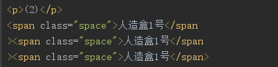
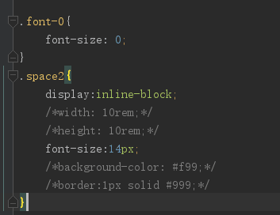
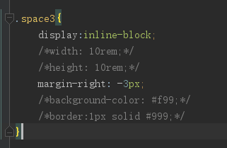
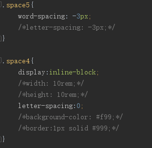
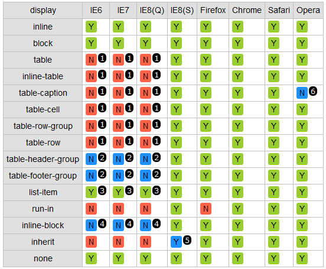

去除inline-block间距有哪几种方法？
【深圳307期】小课堂-csstask06
分享人：颜彦
目录
一.背景介绍
二.知识剖析
三.常见问题
四.解决方案
五.编码实战
六.扩展思考
七.更多讨论
八.参考文献
一.背景介绍
1、inline-block到底是什么？
2、inline-block为什么会有间距？
1、inline-block到底是什么？
关于inline-block在display里的英文解释：
This value causes an element to generate an inline-level block container. The inside of an inline-block is formatted as a block box, and the element itself is formatted as an atomic inline-level box.
大致意思就是：inline-block 后的元素创建了一个行级的块容器，该元素内部（内容）被格式化成一个块元素，同时元素本身则被格式化成一个行内元素。
一句话解释：它是一个格式化为行内元素的块容器。
兼具行内元素和块元素的特点。
2、inline-block为什么会有间距？
归根结底这是一个西文排版的问题。举一个很简单的例子：
I am very happy
南京市长江大桥欢迎您
英文有空格作为词分界，而中文则没有。（这背后延伸出一个中文分词的问题）
这个问题的原因可以上述到SGML(标准通用标记语言)和TeX(排版工具)，它实际上是一个行内（inline）的问题，它由空格、换行或回车所产生空白符所致
二.知识剖析
既然知道问题产生的原因，解决方法就由此得出。
1、改变代码书写方式。
2、改变字符大小。
3、改变元素间距。
三.常见问题
常见去除inline-block间距的方法有哪些？
四.解决方案
方法一: 改变书写方式
方法二：font-size
方法三：使用margin负值
方法四：使用word-spacing或letter-spacing
方法一:改变书写方式
元素间留白间距出现的原因就是标签段之间的空格，因此，去掉HTML中的空格，自然间距就消失了。
人造盒1号人造盒1号人造盒1号
我们可以把inline-block元素写在同一行，这种方案是最直接的解决方案，但却也是最不靠谱的方案，存在很多不可控因素。 很多场景会让你崩溃：前后端协同；版本更迭；他人接手；自己忘了...，太多一不小心都可能让这个方案失效。
考虑到代码可读性，显然连成一行的写法是不可取的，我们可以进行改进，还有下面非人类的写法：
方法二：font-size
这个方法，基本上可以解决大部分浏览器下inline-block元素之间的间距。
方法三：使用margin负值
margin负值的大小与上下文的字体和文字大小相关，Arial字体的margin负值为-3像素，Tahoma和Verdana就是-4像素，而Geneva为-6像素。由于外部环境的不确定性，以及最后一个元素多出的父margin值等问题，这个方法不适合大规模使用。
方法四：使用word-spacing或letter-spacing
一个是字符间距(letter-spacing)一个是单词间距(word-spacing)，大同小异。 letter-spacing子元素要设置letter-spacing为0，不然会继承父元素的值；使用word-spacing时，只需设置父元素word-spacing为合适值即可。
使用letter-spacing和word-spacing时，其在不同浏览器下效果不同。
5.编码实战
6.扩展思考
上面使用到的几种方法都存在一定的缺陷，怎样兼容尽可能多的浏览器？
在不同情况下选用不同的方法，font-size基本上可以解决大部分浏览器下inline-block元素之间的间距。或者可以同时写多种方法，这样就可以兼容不同浏览器

这个元素的属性很奇特，刚出现的时候用得却不多，因为当初它在IE上的兼容性不好
window7上运行的IE版本是IE8，微软已经在2015年终止了对Windows 7的主流支持，准备到2020年停止对window7的所有技术支持
现在全浏览器对inline-block兼容性都很好，CSS任务很多布局也是利用这个元素的特殊属性来布局。再加上CSS压缩成一行完全解决空白字符间距问题。有点得心应手的感觉。
但是自提出这个元素过去10多年，现在更是出现flex、Grid这类好用的排版布局方式。他们确实有一些兼容性问题。好消息是2017年9月27日CSS弹性盒子布局规范已处于最终征求意见稿阶段，各大浏览器也渐渐支持弹性盒子的所有功能。
相信各位在css任务中刚接触flex的时候惊为天人，以后它的应用会越来越多，连B/S的4.0版也要加入flex属性，这个蛋疼的应用问题会随着时间消失。
四种方法哪种更为实用呢？
全都不实用，第一种不方便书写，后几种会导致内容和格式的依赖性较强，违背内容与样式分离的要求。在实际布局中很少单纯用inline-block排版，经常和float、position、flex配合使用。
我暂时知道的实用方法是用代码压缩，原理是方法1的特性，将代码压缩到一行。工具有Uglify等。或者使用不产生额外空白节点或者支持空白控制的模板语言。比如Jade、Smarty（{strip} | Smarty）等
这些方法都是在CSS控制空白字符压缩特性尚未得到普遍支持之前使用的。在网上搜索的信息都是2012年、2013年的内容。如果项目还要考虑兼容IE8以下或者奇奇怪怪浏览器的话，了解一下这个问题也未尝不可，至少遇到问题知道怎么找解决方法。
7.更多讨论
8.参考文献
参考一：张鑫旭-鑫空间-鑫生活
参考三：CSS Flexible Box Layout Module Level 1
参考四：使用CSS弹性盒子
参考五：有哪些好方法能处理 display: inline-block 元素之间出现的空格？
鸣谢
感谢大家观看
黄源志 | 颜彦